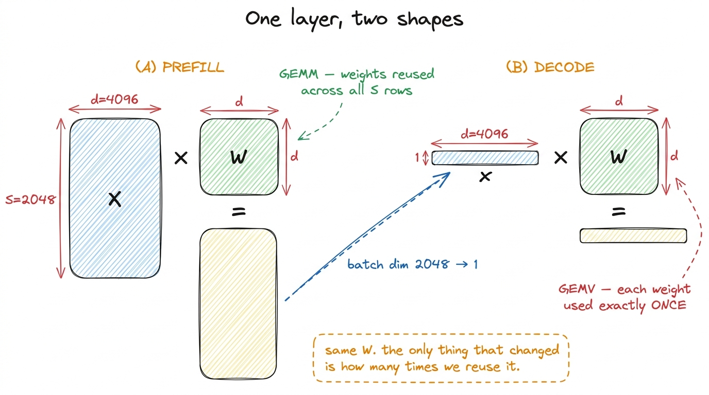
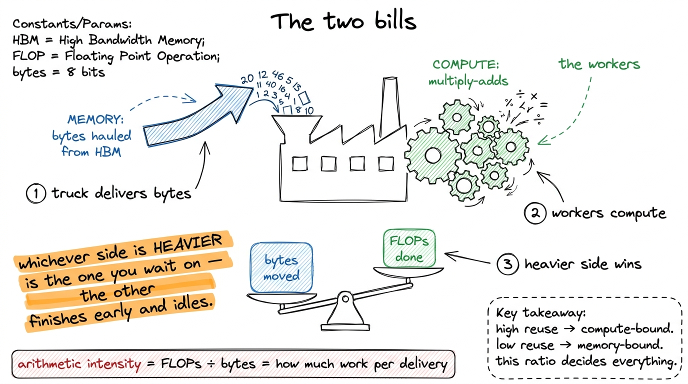
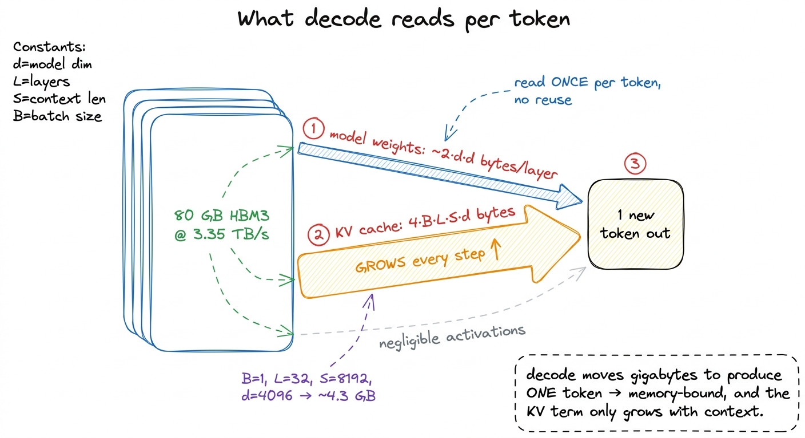
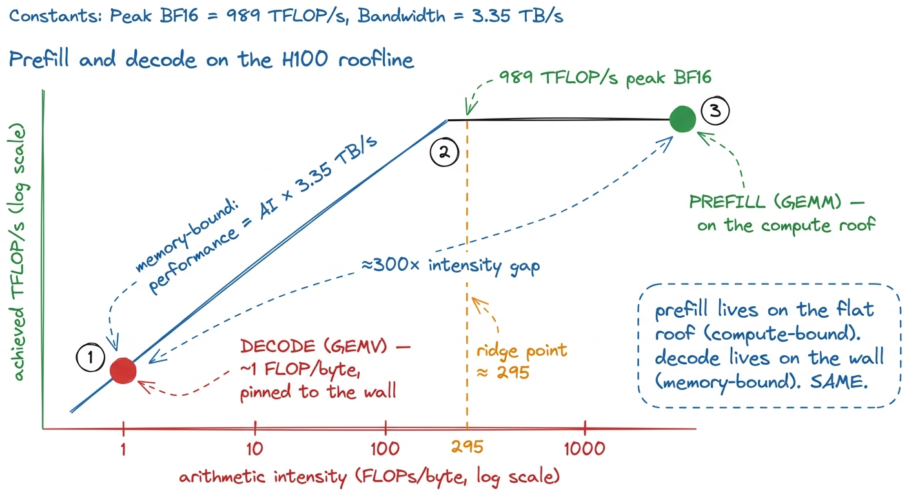

Prefill vs decode: two different machines
When I first profiled a serving loop end-to-end, the thing that stopped me was that one model, one set of weights, ran two workloads that look almost identical on paper and behave like completely different machines on the die. The first, prefill, ingests the whole prompt at once and computes the first token. The second, decode, emits every token after that, one at a time. Both are "just" the same transformer forward pass — the same weights, the same attention, the same MLP. And yet one of them can pull most of the H100's tensor-core throughput while the other leaves the vast majority of that silicon idle. It initially puzzled me: if the math is identical, why does one kernel work for one phase and fall over on the other? Write one kernel for both and you will be badly wrong for at least one of them.
The reason turned out to be the whole thesis of this site compressed into a single serving loop. Prefill is a stack of big GEMMs; decode is a stack of tiny GEMVs. From the three regimes we already know that decides everything: prefill is compute-bound, decode is memory-bound, and the memory it is bound on is dominated by one specific tensor — the KV cache. In this worklog I pull the two phases apart, run the napkin math on each, and show why they demand opposite kernels.
Same math, two shapes
Take one linear layer, a weight matrix W of shape [d, d] — call it d = 4096 for a mid-size model. In prefill we push the entire prompt through it at once. If the prompt has S tokens (say S = 2048), the activation is a matrix X of shape [S, d], and the layer computes X · W: a [2048, 4096] × [4096, 4096] matrix-matrix multiply. That is a General Matrix Multiply (GEMM), and it is exactly the workload the whole GEMM ladder on this site is built to feed.
In decode, we have already processed the prompt. We now generate token 2049, then 2050, then 2051 — and on each step we feed the model exactly one new token. The activation is a single row, x of shape [1, d], and the layer computes x · W: a [1, 4096] × [4096, 4096] matrix-vector multiply (GEMV). Same weights. Same W. The only thing that changed is that the "batch" dimension of the activation collapsed from 2048 to 1.

figure rendering · The same weight matrix, driven by a matrix in prefill and by a singleThat collapse is the entire story, because arithmetic intensity — FLOPs performed per byte read — lives or dies on reuse.
The arithmetic-intensity cliff
Run the napkin math on that linear layer in FP16, two bytes per number.
In prefill, the multiply does 2 · S · d · d FLOPs and must read the weight matrix once: d · d numbers, 2 · d · d bytes. The activations are comparatively small. So the arithmetic intensity is roughly (2·S·d·d) / (2·d·d) = S — about 2048 FLOPs per byte. Every weight we drag out of memory gets multiplied against 2048 different token rows before we throw it away. That is a mountain of reuse, far past the H100's ridge point of roughly 295 FLOPs per byte.1 The ridge point is peak compute over peak bandwidth: ≈ 989 TFLOP/s BF16 ÷ 3.35 TB/s ≈ 295 FLOPs/byte on an SXM5 H100. Anything below that line is memory-bound no matter how you write it. Prefill is comfortably compute-bound.
In decode, the same layer does 2 · 1 · d · d FLOPs and reads the same 2 · d · d bytes of weights. Arithmetic intensity: (2·1·d·d) / (2·d·d) = 1. One FLOP per byte. We read the entire weight matrix out of HBM to touch each weight exactly once. We are three hundred times below the ridge. The tensor cores — 989 TFLOP/s of them — sit there with nothing to chew on while the memory system heaves the weights across the bus.2 This is why a decode step's latency is, to first order, total model bytes ÷ HBM bandwidth. A 13-billion-parameter model in FP16 is ~26 GB; at 3.35 TB/s that is a hard floor of ~7.8 ms per token from weight reads alone, before you touch the KV cache. Memory bandwidth, not FLOPs, is the token-rate ceiling.

figure rendering · Prefill sits on the compute ceiling; decode is pinned to the bandwidthTwo dots on the same roofline, three orders of magnitude apart. No single kernel is optimal for both points, which is why real inference stacks ship a prefill kernel and a decode kernel and never confuse the two.
Decode's real bill: the KV cache
So far decode looks bandwidth-bound purely on weight reads. But there is a second tensor that makes it worse, and it is the one that actually dominates at long context: the Key-Value cache (KV cache).
Attention needs every previous token's key and value vectors to compute the next token. Recomputing them each step would be quadratic and absurd, so we cache them: after prefill we have stored K and V for all S prompt tokens, and every decode step appends one more K and V row and then reads the entire accumulated cache back to do attention.
The size of that cache grows with everything you care about. For one layer it holds 2 (K and V) × S × d numbers; across L layers and a batch of B sequences it is 2 · B · L · S · d elements. In FP16 that is 4 · B · L · S · d bytes.3 With grouped-query attention the KV heads are fewer than the query heads, so replace d with the KV-projection width d_kv. GQA exists almost entirely to shrink this number — it is a KV-cache-bandwidth optimization dressed up as an architecture choice. Put real numbers in: a 32-layer model with d = 4096, one sequence, at S = 8192 tokens of context is 4 · 1 · 32 · 8192 · 4096 ≈ 4.3 GB of KV cache — for a single request.
Here is the punchline. On decode step S, the attention part of the kernel must stream that entire KV cache — every key and value for every prior token — out of HBM, and it does so to produce a single new token's worth of output. The reuse is, again, essentially zero: each cached byte is read once and multiplied once. At long context the KV read can rival or exceed the weight read as the dominant term in the memory bill, and it grows every single step as the sequence lengthens.4 This is why decode latency creeps up over a long generation even though the per-step FLOP count barely moves: the KV cache you must re-stream keeps getting bigger. The compute is flat; the bytes are not.

figure rendering · Every decode step re-reads the full weights and the entire KV cache toWhy the same kernel can't serve both
Now the two machines are fully visible, and their optimization playbooks are opposite — exactly as the three regimes predicted.
For prefill you want the whole GEMM apparatus: tile the matrices into shared memory, stage them through registers, keep the tensor cores saturated with wgmma instructions, chase occupancy so a stall on one warp is hidden by another. This is the ladder that climbs from a naive kernel at 1.3% of cuBLAS to a warp-tiled kernel at 93.7%. All of it is compute-side work — shaving math stalls, feeding the tensor cores — because prefill is compute-bound and the only sin is letting the math units idle. Shared-memory tiling matters here because on-chip bandwidth dwarfs HBM; it is what keeps the GEMM fed.
For decode almost none of that helps. A GEMV has no reuse to exploit — there is no [S, d] tile to stage, just one row — so the tensor cores are the wrong tool and shared-memory tiling buys you little. What you optimize instead is bytes moved: read the weights in the most coalesced, widest transactions you can (float4 loads, full 128-byte cache lines), keep the whole thing in the fewest possible bytes with lower precision or quantized weights, and lay out the KV cache so streaming it is perfectly sequential. Decode is a memory-bandwidth kernel wearing a matmul costume, and every win is a byte-movement win. A tensor-core GEMM kernel pointed at a [1, 4096] activation will run — and waste almost all of its issue slots on a problem that has no arithmetic intensity to give them.
Batching: how decode climbs back up the wall
There is one lever that changes decode's regime, and it is the reason production inference servers are built the way they are: batching.
The GEMV is memory-bound because a single activation row reuses each weight once. But if we decode B different sequences at the same time — 64 users, each generating their next token — the activations stack back into a [B, d] matrix, and x · W becomes a GEMM again: [64, 4096] × [4096, 4096]. Now each weight we read from HBM is multiplied against 64 different sequences' rows before we discard it. The arithmetic intensity climbs from 1 to B, and at large enough B decode crosses the ridge point and becomes compute-bound just like prefill.5 The catch is that batching helps the weight reads — those are shared across the batch — but not the KV-cache reads, which are per-sequence and do not amortize. Each sequence still needs its own full KV stream. Past a point, KV bandwidth and KV capacity (80 GB of HBM only holds so many long contexts) become the true limits, which is what paged-KV and continuous-batching schemes exist to manage.
This is why throughput-oriented serving batches aggressively and why a lone decode request is so wasteful of the hardware: it pays full weight-read bandwidth to produce one token when it could have produced 64. Batching is, quite literally, walking decode back up the roofline — trading a little per-request latency for an order-of-magnitude better use of the chip.

figure rendering · The serving loop is one compute-bound prefill followed by a long tailSo the shape of a good inference engine falls straight out of the physics. Prefill is a compute-bound GEMM: feed the tensor cores, and reuse everything the GEMM ladder taught us. Decode is a memory-bound GEMV whose bill is dominated by weights and a KV cache that only grows: move fewer bytes, stream them perfectly, and batch until the weights amortize. Two workloads, two kernels, two regimes — and the whole discipline of inference kernel engineering is knowing, at every step, which machine I am standing in front of. To go further, I need to build each kernel on its own terms: next I write the prefill kernel properly, then turn to the fused attention kernel that makes the KV stream cheap.